import numpy as np
import sklearn
import seaborn as sns
import pandas as pd
from sklearn.metrics import accuracy_score
from sklearn.model_selection import train_test_split, cross_val_score, StratifiedKFold, GridSearchCV, LearningCurveDisplay
from sklearn.ensemble import RandomForestClassifier
from sklearn.tree import DecisionTreeClassifier, plot_tree
from sklearn import tree
import matplotlib.pyplot as pltComparing DT and RandomForest on BMI Data
Imports
Data
Source: https://www.kaggle.com/datasets/sjagkoo7/bmi-body-mass-index?resource=download
data = pd.read_csv("./datasets/bmi_train.csv")
category_mapping = {'Male': 0, 'Female': 1}
data['Gender_Encoded'] = data['Gender'].map(category_mapping) # converts categorical data to numeric data.
X = data.drop(['Gender','Index'], axis=1)
y = data.drop(['Gender', 'Gender_Encoded', 'Height', 'Weight'], axis=1)
print("All X shape: ", X.shape)
print("All y shape: ", y.shape)
validation_data = pd.read_csv("./datasets/bmi_validation.csv")
print("Validation data shape: ", validation_data.shape)
X_train, X_test, y_train, y_test = train_test_split(X, y, test_size=0.2)
print("X_train shape: ", X_train.shape)
print("y_train shape: ", y_train.shape)
print("X_test shape: ", X_test.shape)
print("y_test shape: ", y_test.shape)All X shape: (400, 3)
All y shape: (400, 1)
Validation data shape: (100, 3)
X_train shape: (320, 3)
y_train shape: (320, 1)
X_test shape: (80, 3)
y_test shape: (80, 1)Class Distribution
# Class imbalance, more obesity.
unique_values, counts = np.unique(y, return_counts=True)
plt.bar(unique_values, counts)
plt.title("BMI Classes in the Entire Dataset")
plt.xlabel("BMI Class")
plt.ylabel("Occurences in Entire Dataset")
plt.show()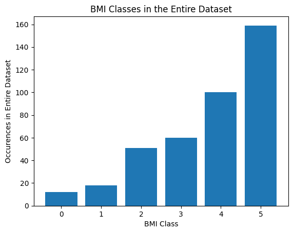
Feature Correlation
correlation_matrix = data.corr()
# Display a heatmap of the correlation matrix
plt.figure(figsize=(10, 6))
sns.heatmap(correlation_matrix, annot=True, cmap='coolwarm', center=0)
plt.title('Correlation Heatmap')
plt.show()C:\Users\dwh71\AppData\Local\Temp\ipykernel_33884\1179218035.py:1: FutureWarning: The default value of numeric_only in DataFrame.corr is deprecated. In a future version, it will default to False. Select only valid columns or specify the value of numeric_only to silence this warning.
correlation_matrix = data.corr()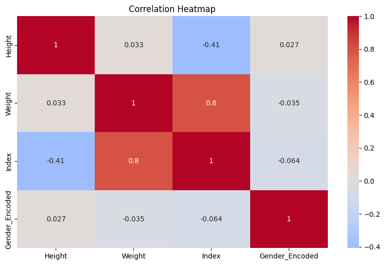
Scatter Plot of Data
plt.figure(figsize=(6, 6))
sns.scatterplot(data=data, x='Height', y='Weight', hue='Index', palette='deep')
plt.title('Scatter Plot of Height vs Weight')
plt.show()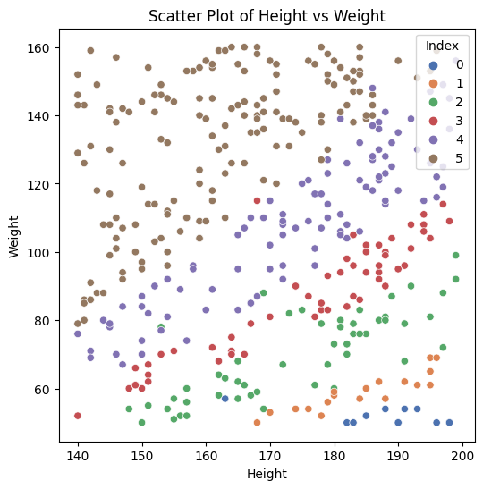
Distribution of Features
# Compare height and weight between male and female genders using box plots
plt.figure(figsize=(10, 6))
sns.boxplot(data=data, x='Gender', y='Height')
plt.title('Comparison of Height between Genders')
plt.xlabel('Gender')
plt.ylabel('Height')
plt.show()
plt.figure(figsize=(10, 6))
sns.boxplot(data=data, x='Gender', y='Weight')
plt.title('Comparison of Weight between Genders')
plt.xlabel('Gender')
plt.ylabel('Weight')
plt.show()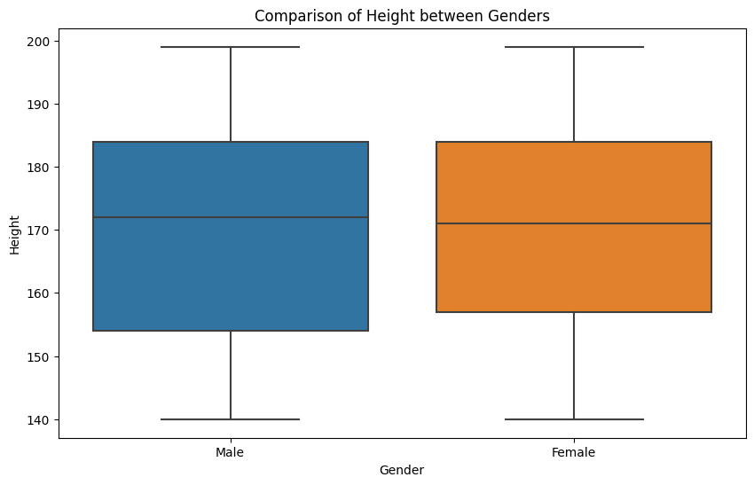

Building the DT Model
Hyperparameter Tuning DT
param_grid = {
'max_depth': [i for i in range(2, 9)],
'min_samples_leaf': [2 ** i for i in range(0, 4)],
'criterion': ["entropy", "gini"]
}
dt = DecisionTreeClassifier(random_state=42)
grid_search_dt = GridSearchCV(dt, param_grid, cv=StratifiedKFold(n_splits=3), scoring='accuracy')
grid_search_dt.fit(X_train, y_train)
best_params_dt = grid_search_dt.best_params_
print("Best Hyperparameters:", best_params_dt)
print("Best Score:", grid_search_dt.best_score_)Best Hyperparameters: {'criterion': 'entropy', 'max_depth': 8, 'min_samples_leaf': 1}
Best Score: 0.8281314289073061Decision Tree Classifier
dt = DecisionTreeClassifier(max_depth=best_params_dt["max_depth"], min_samples_leaf=best_params_dt["min_samples_leaf"], criterion=best_params_dt["criterion"])
dt.fit(X_train, y_train)
y_pred = dt.predict(X_test)Decision Tree Visualization
plt.figure(figsize=(30, 20))
plot_tree(dt, feature_names=X_train.columns.tolist(), class_names=['0', '1', '2','3','4','5'], filled=True)[Text(0.5918141592920354, 0.9444444444444444, 'Weight <= 94.5\nentropy = 2.189\nsamples = 320\nvalue = [11, 17, 39, 47, 76, 130]\nclass = 5'),
Text(0.3915929203539823, 0.8333333333333334, 'Weight <= 69.5\nentropy = 2.381\nsamples = 126\nvalue = [11, 17, 39, 31, 21, 7]\nclass = 2'),
Text(0.23893805309734514, 0.7222222222222222, 'Height <= 167.5\nentropy = 2.037\nsamples = 56\nvalue = [11, 17, 18, 9, 1, 0]\nclass = 2'),
Text(0.1415929203539823, 0.6111111111111112, 'Height <= 152.5\nentropy = 1.371\nsamples = 25\nvalue = [1, 0, 14, 9, 1, 0]\nclass = 2'),
Text(0.07079646017699115, 0.5, 'Weight <= 57.5\nentropy = 1.189\nsamples = 12\nvalue = [0, 0, 3, 8, 1, 0]\nclass = 3'),
Text(0.035398230088495575, 0.3888888888888889, 'Height <= 144.0\nentropy = 0.811\nsamples = 4\nvalue = [0, 0, 3, 1, 0, 0]\nclass = 2'),
Text(0.017699115044247787, 0.2777777777777778, 'entropy = 0.0\nsamples = 1\nvalue = [0, 0, 0, 1, 0, 0]\nclass = 3'),
Text(0.05309734513274336, 0.2777777777777778, 'entropy = 0.0\nsamples = 3\nvalue = [0, 0, 3, 0, 0, 0]\nclass = 2'),
Text(0.10619469026548672, 0.3888888888888889, 'Weight <= 68.0\nentropy = 0.544\nsamples = 8\nvalue = [0, 0, 0, 7, 1, 0]\nclass = 3'),
Text(0.08849557522123894, 0.2777777777777778, 'entropy = 0.0\nsamples = 7\nvalue = [0, 0, 0, 7, 0, 0]\nclass = 3'),
Text(0.12389380530973451, 0.2777777777777778, 'entropy = 0.0\nsamples = 1\nvalue = [0, 0, 0, 0, 1, 0]\nclass = 4'),
Text(0.21238938053097345, 0.5, 'Weight <= 66.0\nentropy = 0.773\nsamples = 13\nvalue = [1, 0, 11, 1, 0, 0]\nclass = 2'),
Text(0.17699115044247787, 0.3888888888888889, 'Height <= 162.5\nentropy = 0.439\nsamples = 11\nvalue = [1, 0, 10, 0, 0, 0]\nclass = 2'),
Text(0.1592920353982301, 0.2777777777777778, 'entropy = 0.0\nsamples = 7\nvalue = [0, 0, 7, 0, 0, 0]\nclass = 2'),
Text(0.19469026548672566, 0.2777777777777778, 'Weight <= 57.5\nentropy = 0.811\nsamples = 4\nvalue = [1, 0, 3, 0, 0, 0]\nclass = 2'),
Text(0.17699115044247787, 0.16666666666666666, 'entropy = 0.0\nsamples = 1\nvalue = [1, 0, 0, 0, 0, 0]\nclass = 0'),
Text(0.21238938053097345, 0.16666666666666666, 'entropy = 0.0\nsamples = 3\nvalue = [0, 0, 3, 0, 0, 0]\nclass = 2'),
Text(0.24778761061946902, 0.3888888888888889, 'Height <= 163.5\nentropy = 1.0\nsamples = 2\nvalue = [0, 0, 1, 1, 0, 0]\nclass = 2'),
Text(0.23008849557522124, 0.2777777777777778, 'entropy = 0.0\nsamples = 1\nvalue = [0, 0, 0, 1, 0, 0]\nclass = 3'),
Text(0.26548672566371684, 0.2777777777777778, 'entropy = 0.0\nsamples = 1\nvalue = [0, 0, 1, 0, 0, 0]\nclass = 2'),
Text(0.336283185840708, 0.6111111111111112, 'Weight <= 55.0\nentropy = 1.383\nsamples = 31\nvalue = [10, 17, 4, 0, 0, 0]\nclass = 1'),
Text(0.3008849557522124, 0.5, 'Height <= 180.0\nentropy = 0.918\nsamples = 15\nvalue = [10, 5, 0, 0, 0, 0]\nclass = 0'),
Text(0.2831858407079646, 0.3888888888888889, 'entropy = 0.0\nsamples = 5\nvalue = [0, 5, 0, 0, 0, 0]\nclass = 1'),
Text(0.3185840707964602, 0.3888888888888889, 'entropy = 0.0\nsamples = 10\nvalue = [10, 0, 0, 0, 0, 0]\nclass = 0'),
Text(0.37168141592920356, 0.5, 'Height <= 182.0\nentropy = 0.811\nsamples = 16\nvalue = [0, 12, 4, 0, 0, 0]\nclass = 1'),
Text(0.35398230088495575, 0.3888888888888889, 'Weight <= 59.5\nentropy = 0.985\nsamples = 7\nvalue = [0, 3, 4, 0, 0, 0]\nclass = 2'),
Text(0.336283185840708, 0.2777777777777778, 'entropy = 0.0\nsamples = 3\nvalue = [0, 3, 0, 0, 0, 0]\nclass = 1'),
Text(0.37168141592920356, 0.2777777777777778, 'entropy = 0.0\nsamples = 4\nvalue = [0, 0, 4, 0, 0, 0]\nclass = 2'),
Text(0.3893805309734513, 0.3888888888888889, 'entropy = 0.0\nsamples = 9\nvalue = [0, 9, 0, 0, 0, 0]\nclass = 1'),
Text(0.5442477876106194, 0.7222222222222222, 'Height <= 168.5\nentropy = 1.894\nsamples = 70\nvalue = [0, 0, 21, 22, 20, 7]\nclass = 3'),
Text(0.4778761061946903, 0.6111111111111112, 'Height <= 148.5\nentropy = 1.408\nsamples = 33\nvalue = [0, 0, 0, 7, 19, 7]\nclass = 4'),
Text(0.4424778761061947, 0.5, 'Weight <= 84.5\nentropy = 0.996\nsamples = 13\nvalue = [0, 0, 0, 0, 6, 7]\nclass = 5'),
Text(0.4247787610619469, 0.3888888888888889, 'Height <= 141.5\nentropy = 0.592\nsamples = 7\nvalue = [0, 0, 0, 0, 6, 1]\nclass = 4'),
Text(0.40707964601769914, 0.2777777777777778, 'Height <= 140.5\nentropy = 1.0\nsamples = 2\nvalue = [0, 0, 0, 0, 1, 1]\nclass = 4'),
Text(0.3893805309734513, 0.16666666666666666, 'entropy = 0.0\nsamples = 1\nvalue = [0, 0, 0, 0, 1, 0]\nclass = 4'),
Text(0.4247787610619469, 0.16666666666666666, 'entropy = 0.0\nsamples = 1\nvalue = [0, 0, 0, 0, 0, 1]\nclass = 5'),
Text(0.4424778761061947, 0.2777777777777778, 'entropy = 0.0\nsamples = 5\nvalue = [0, 0, 0, 0, 5, 0]\nclass = 4'),
Text(0.46017699115044247, 0.3888888888888889, 'entropy = 0.0\nsamples = 6\nvalue = [0, 0, 0, 0, 0, 6]\nclass = 5'),
Text(0.5132743362831859, 0.5, 'Weight <= 80.5\nentropy = 0.934\nsamples = 20\nvalue = [0, 0, 0, 7, 13, 0]\nclass = 4'),
Text(0.49557522123893805, 0.3888888888888889, 'Height <= 159.0\nentropy = 0.946\nsamples = 11\nvalue = [0, 0, 0, 7, 4, 0]\nclass = 3'),
Text(0.4778761061946903, 0.2777777777777778, 'Weight <= 72.0\nentropy = 0.722\nsamples = 5\nvalue = [0, 0, 0, 1, 4, 0]\nclass = 4'),
Text(0.46017699115044247, 0.16666666666666666, 'Gender_Encoded <= 0.5\nentropy = 1.0\nsamples = 2\nvalue = [0, 0, 0, 1, 1, 0]\nclass = 3'),
Text(0.4424778761061947, 0.05555555555555555, 'entropy = 0.0\nsamples = 1\nvalue = [0, 0, 0, 1, 0, 0]\nclass = 3'),
Text(0.4778761061946903, 0.05555555555555555, 'entropy = 0.0\nsamples = 1\nvalue = [0, 0, 0, 0, 1, 0]\nclass = 4'),
Text(0.49557522123893805, 0.16666666666666666, 'entropy = 0.0\nsamples = 3\nvalue = [0, 0, 0, 0, 3, 0]\nclass = 4'),
Text(0.5132743362831859, 0.2777777777777778, 'entropy = 0.0\nsamples = 6\nvalue = [0, 0, 0, 6, 0, 0]\nclass = 3'),
Text(0.5309734513274337, 0.3888888888888889, 'entropy = 0.0\nsamples = 9\nvalue = [0, 0, 0, 0, 9, 0]\nclass = 4'),
Text(0.6106194690265486, 0.6111111111111112, 'Weight <= 80.5\nentropy = 1.133\nsamples = 37\nvalue = [0, 0, 21, 15, 1, 0]\nclass = 2'),
Text(0.5929203539823009, 0.5, 'entropy = 0.0\nsamples = 11\nvalue = [0, 0, 11, 0, 0, 0]\nclass = 2'),
Text(0.6283185840707964, 0.5, 'Height <= 188.5\nentropy = 1.169\nsamples = 26\nvalue = [0, 0, 10, 15, 1, 0]\nclass = 3'),
Text(0.6106194690265486, 0.3888888888888889, 'Weight <= 89.0\nentropy = 1.049\nsamples = 21\nvalue = [0, 0, 5, 15, 1, 0]\nclass = 3'),
Text(0.5663716814159292, 0.2777777777777778, 'Height <= 176.0\nentropy = 0.98\nsamples = 12\nvalue = [0, 0, 5, 7, 0, 0]\nclass = 3'),
Text(0.5309734513274337, 0.16666666666666666, 'Gender_Encoded <= 0.5\nentropy = 0.811\nsamples = 4\nvalue = [0, 0, 3, 1, 0, 0]\nclass = 2'),
Text(0.5132743362831859, 0.05555555555555555, 'entropy = 0.0\nsamples = 1\nvalue = [0, 0, 0, 1, 0, 0]\nclass = 3'),
Text(0.5486725663716814, 0.05555555555555555, 'entropy = 0.0\nsamples = 3\nvalue = [0, 0, 3, 0, 0, 0]\nclass = 2'),
Text(0.6017699115044248, 0.16666666666666666, 'Height <= 183.0\nentropy = 0.811\nsamples = 8\nvalue = [0, 0, 2, 6, 0, 0]\nclass = 3'),
Text(0.584070796460177, 0.05555555555555555, 'entropy = 0.0\nsamples = 5\nvalue = [0, 0, 0, 5, 0, 0]\nclass = 3'),
Text(0.6194690265486725, 0.05555555555555555, 'entropy = 0.918\nsamples = 3\nvalue = [0, 0, 2, 1, 0, 0]\nclass = 2'),
Text(0.6548672566371682, 0.2777777777777778, 'Height <= 173.0\nentropy = 0.503\nsamples = 9\nvalue = [0, 0, 0, 8, 1, 0]\nclass = 3'),
Text(0.6371681415929203, 0.16666666666666666, 'entropy = 0.0\nsamples = 1\nvalue = [0, 0, 0, 0, 1, 0]\nclass = 4'),
Text(0.672566371681416, 0.16666666666666666, 'entropy = 0.0\nsamples = 8\nvalue = [0, 0, 0, 8, 0, 0]\nclass = 3'),
Text(0.6460176991150443, 0.3888888888888889, 'entropy = 0.0\nsamples = 5\nvalue = [0, 0, 5, 0, 0, 0]\nclass = 2'),
Text(0.7920353982300885, 0.8333333333333334, 'Height <= 171.5\nentropy = 1.229\nsamples = 194\nvalue = [0, 0, 0, 16, 55, 123]\nclass = 5'),
Text(0.7345132743362832, 0.7222222222222222, 'Weight <= 116.0\nentropy = 0.363\nsamples = 101\nvalue = [0, 0, 0, 0, 7, 94]\nclass = 5'),
Text(0.7168141592920354, 0.6111111111111112, 'Height <= 164.0\nentropy = 0.797\nsamples = 29\nvalue = [0, 0, 0, 0, 7, 22]\nclass = 5'),
Text(0.6991150442477876, 0.5, 'Weight <= 95.5\nentropy = 0.258\nsamples = 23\nvalue = [0, 0, 0, 0, 1, 22]\nclass = 5'),
Text(0.6814159292035398, 0.3888888888888889, 'entropy = 0.0\nsamples = 1\nvalue = [0, 0, 0, 0, 1, 0]\nclass = 4'),
Text(0.7168141592920354, 0.3888888888888889, 'entropy = 0.0\nsamples = 22\nvalue = [0, 0, 0, 0, 0, 22]\nclass = 5'),
Text(0.7345132743362832, 0.5, 'entropy = 0.0\nsamples = 6\nvalue = [0, 0, 0, 0, 6, 0]\nclass = 4'),
Text(0.7522123893805309, 0.6111111111111112, 'entropy = 0.0\nsamples = 72\nvalue = [0, 0, 0, 0, 0, 72]\nclass = 5'),
Text(0.8495575221238938, 0.7222222222222222, 'Weight <= 126.5\nentropy = 1.454\nsamples = 93\nvalue = [0, 0, 0, 16, 48, 29]\nclass = 4'),
Text(0.7876106194690266, 0.6111111111111112, 'Weight <= 114.5\nentropy = 0.918\nsamples = 48\nvalue = [0, 0, 0, 16, 32, 0]\nclass = 4'),
Text(0.7699115044247787, 0.5, 'Height <= 181.5\nentropy = 1.0\nsamples = 32\nvalue = [0, 0, 0, 16, 16, 0]\nclass = 3'),
Text(0.7522123893805309, 0.3888888888888889, 'entropy = 0.0\nsamples = 13\nvalue = [0, 0, 0, 0, 13, 0]\nclass = 4'),
Text(0.7876106194690266, 0.3888888888888889, 'Weight <= 105.5\nentropy = 0.629\nsamples = 19\nvalue = [0, 0, 0, 16, 3, 0]\nclass = 3'),
Text(0.7699115044247787, 0.2777777777777778, 'entropy = 0.0\nsamples = 10\nvalue = [0, 0, 0, 10, 0, 0]\nclass = 3'),
Text(0.8053097345132744, 0.2777777777777778, 'Height <= 190.0\nentropy = 0.918\nsamples = 9\nvalue = [0, 0, 0, 6, 3, 0]\nclass = 3'),
Text(0.7876106194690266, 0.16666666666666666, 'entropy = 0.0\nsamples = 3\nvalue = [0, 0, 0, 0, 3, 0]\nclass = 4'),
Text(0.8230088495575221, 0.16666666666666666, 'entropy = 0.0\nsamples = 6\nvalue = [0, 0, 0, 6, 0, 0]\nclass = 3'),
Text(0.8053097345132744, 0.5, 'entropy = 0.0\nsamples = 16\nvalue = [0, 0, 0, 0, 16, 0]\nclass = 4'),
Text(0.911504424778761, 0.6111111111111112, 'Height <= 185.5\nentropy = 0.939\nsamples = 45\nvalue = [0, 0, 0, 0, 16, 29]\nclass = 5'),
Text(0.8761061946902655, 0.5, 'Weight <= 139.5\nentropy = 0.529\nsamples = 25\nvalue = [0, 0, 0, 0, 3, 22]\nclass = 5'),
Text(0.8584070796460177, 0.3888888888888889, 'Height <= 178.5\nentropy = 0.881\nsamples = 10\nvalue = [0, 0, 0, 0, 3, 7]\nclass = 5'),
Text(0.8407079646017699, 0.2777777777777778, 'entropy = 0.0\nsamples = 5\nvalue = [0, 0, 0, 0, 0, 5]\nclass = 5'),
Text(0.8761061946902655, 0.2777777777777778, 'Height <= 184.5\nentropy = 0.971\nsamples = 5\nvalue = [0, 0, 0, 0, 3, 2]\nclass = 4'),
Text(0.8584070796460177, 0.16666666666666666, 'Height <= 180.0\nentropy = 0.811\nsamples = 4\nvalue = [0, 0, 0, 0, 3, 1]\nclass = 4'),
Text(0.8407079646017699, 0.05555555555555555, 'entropy = 1.0\nsamples = 2\nvalue = [0, 0, 0, 0, 1, 1]\nclass = 4'),
Text(0.8761061946902655, 0.05555555555555555, 'entropy = 0.0\nsamples = 2\nvalue = [0, 0, 0, 0, 2, 0]\nclass = 4'),
Text(0.8938053097345132, 0.16666666666666666, 'entropy = 0.0\nsamples = 1\nvalue = [0, 0, 0, 0, 0, 1]\nclass = 5'),
Text(0.8938053097345132, 0.3888888888888889, 'entropy = 0.0\nsamples = 15\nvalue = [0, 0, 0, 0, 0, 15]\nclass = 5'),
Text(0.9469026548672567, 0.5, 'Weight <= 139.0\nentropy = 0.934\nsamples = 20\nvalue = [0, 0, 0, 0, 13, 7]\nclass = 4'),
Text(0.9292035398230089, 0.3888888888888889, 'entropy = 0.0\nsamples = 9\nvalue = [0, 0, 0, 0, 9, 0]\nclass = 4'),
Text(0.9646017699115044, 0.3888888888888889, 'Height <= 196.5\nentropy = 0.946\nsamples = 11\nvalue = [0, 0, 0, 0, 4, 7]\nclass = 5'),
Text(0.9469026548672567, 0.2777777777777778, 'Height <= 194.0\nentropy = 0.544\nsamples = 8\nvalue = [0, 0, 0, 0, 1, 7]\nclass = 5'),
Text(0.9292035398230089, 0.16666666666666666, 'entropy = 0.0\nsamples = 5\nvalue = [0, 0, 0, 0, 0, 5]\nclass = 5'),
Text(0.9646017699115044, 0.16666666666666666, 'Weight <= 150.0\nentropy = 0.918\nsamples = 3\nvalue = [0, 0, 0, 0, 1, 2]\nclass = 5'),
Text(0.9469026548672567, 0.05555555555555555, 'entropy = 0.0\nsamples = 1\nvalue = [0, 0, 0, 0, 1, 0]\nclass = 4'),
Text(0.9823008849557522, 0.05555555555555555, 'entropy = 0.0\nsamples = 2\nvalue = [0, 0, 0, 0, 0, 2]\nclass = 5'),
Text(0.9823008849557522, 0.2777777777777778, 'entropy = 0.0\nsamples = 3\nvalue = [0, 0, 0, 0, 3, 0]\nclass = 4')]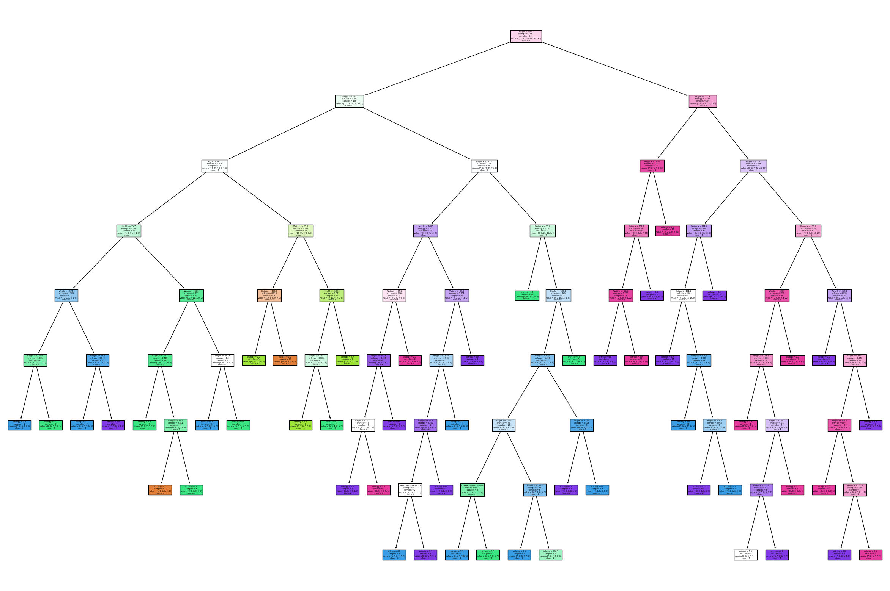
Accuracy Results on Test Data
print("Micro F1: ", sklearn.metrics.f1_score(y_test, y_pred, average='micro'))
print("Macro F1: ", sklearn.metrics.f1_score(y_test, y_pred, average='macro'))
print("Precision: ", sklearn.metrics.precision_score(y_test, y_pred, average="weighted"))
print("Recall: ", sklearn.metrics.recall_score(y_test, y_pred, average='weighted'))
# Calculate AUC-PRC for each class
auc_prc_scores = []
for class_index in range(y_pred.shape[0]):
precision, recall, _ = sklearn.metrics.precision_recall_curve(y_test == class_index, y_pred == class_index)
auc_prc_scores.append(sklearn.metrics.auc(recall, precision))
# Compute the summary metric (e.g., micro-average)
micro_avg_auc_prc = sklearn.metrics.auc(recall, precision)
print("AUC-PRC for Each Class:", auc_prc_scores)
print("Micro-Average AUC-PRC:", micro_avg_auc_prc)Micro F1: 0.8000000000000002
Macro F1: 0.7033683460612853
Precision: 0.8400535714285715
Recall: 0.8
AUC-PRC for Each Class: [0.75, 0.625, 0.7875, 0.8284340659340659, 0.8070833333333334, 0.915301724137931, 0.5, 0.5, 0.5, 0.5, 0.5, 0.5, 0.5, 0.5, 0.5, 0.5, 0.5, 0.5, 0.5, 0.5, 0.5, 0.5, 0.5, 0.5, 0.5, 0.5, 0.5, 0.5, 0.5, 0.5, 0.5, 0.5, 0.5, 0.5, 0.5, 0.5, 0.5, 0.5, 0.5, 0.5, 0.5, 0.5, 0.5, 0.5, 0.5, 0.5, 0.5, 0.5, 0.5, 0.5, 0.5, 0.5, 0.5, 0.5, 0.5, 0.5, 0.5, 0.5, 0.5, 0.5, 0.5, 0.5, 0.5, 0.5, 0.5, 0.5, 0.5, 0.5, 0.5, 0.5, 0.5, 0.5, 0.5, 0.5, 0.5, 0.5, 0.5, 0.5, 0.5, 0.5]
Micro-Average AUC-PRC: 0.5c:\Users\dwh71\AppData\Local\Programs\Python\Python310\lib\site-packages\sklearn\metrics\_ranking.py:979: UserWarning: No positive class found in y_true, recall is set to one for all thresholds.
warnings.warn(
c:\Users\dwh71\AppData\Local\Programs\Python\Python310\lib\site-packages\sklearn\metrics\_ranking.py:979: UserWarning: No positive class found in y_true, recall is set to one for all thresholds.
warnings.warn(
c:\Users\dwh71\AppData\Local\Programs\Python\Python310\lib\site-packages\sklearn\metrics\_ranking.py:979: UserWarning: No positive class found in y_true, recall is set to one for all thresholds.
warnings.warn(
c:\Users\dwh71\AppData\Local\Programs\Python\Python310\lib\site-packages\sklearn\metrics\_ranking.py:979: UserWarning: No positive class found in y_true, recall is set to one for all thresholds.
warnings.warn(
c:\Users\dwh71\AppData\Local\Programs\Python\Python310\lib\site-packages\sklearn\metrics\_ranking.py:979: UserWarning: No positive class found in y_true, recall is set to one for all thresholds.
warnings.warn(
c:\Users\dwh71\AppData\Local\Programs\Python\Python310\lib\site-packages\sklearn\metrics\_ranking.py:979: UserWarning: No positive class found in y_true, recall is set to one for all thresholds.
warnings.warn(
c:\Users\dwh71\AppData\Local\Programs\Python\Python310\lib\site-packages\sklearn\metrics\_ranking.py:979: UserWarning: No positive class found in y_true, recall is set to one for all thresholds.
warnings.warn(
c:\Users\dwh71\AppData\Local\Programs\Python\Python310\lib\site-packages\sklearn\metrics\_ranking.py:979: UserWarning: No positive class found in y_true, recall is set to one for all thresholds.
warnings.warn(
c:\Users\dwh71\AppData\Local\Programs\Python\Python310\lib\site-packages\sklearn\metrics\_ranking.py:979: UserWarning: No positive class found in y_true, recall is set to one for all thresholds.
warnings.warn(
c:\Users\dwh71\AppData\Local\Programs\Python\Python310\lib\site-packages\sklearn\metrics\_ranking.py:979: UserWarning: No positive class found in y_true, recall is set to one for all thresholds.
warnings.warn(
c:\Users\dwh71\AppData\Local\Programs\Python\Python310\lib\site-packages\sklearn\metrics\_ranking.py:979: UserWarning: No positive class found in y_true, recall is set to one for all thresholds.
warnings.warn(
c:\Users\dwh71\AppData\Local\Programs\Python\Python310\lib\site-packages\sklearn\metrics\_ranking.py:979: UserWarning: No positive class found in y_true, recall is set to one for all thresholds.
warnings.warn(
c:\Users\dwh71\AppData\Local\Programs\Python\Python310\lib\site-packages\sklearn\metrics\_ranking.py:979: UserWarning: No positive class found in y_true, recall is set to one for all thresholds.
warnings.warn(
c:\Users\dwh71\AppData\Local\Programs\Python\Python310\lib\site-packages\sklearn\metrics\_ranking.py:979: UserWarning: No positive class found in y_true, recall is set to one for all thresholds.
warnings.warn(
c:\Users\dwh71\AppData\Local\Programs\Python\Python310\lib\site-packages\sklearn\metrics\_ranking.py:979: UserWarning: No positive class found in y_true, recall is set to one for all thresholds.
warnings.warn(
c:\Users\dwh71\AppData\Local\Programs\Python\Python310\lib\site-packages\sklearn\metrics\_ranking.py:979: UserWarning: No positive class found in y_true, recall is set to one for all thresholds.
warnings.warn(
c:\Users\dwh71\AppData\Local\Programs\Python\Python310\lib\site-packages\sklearn\metrics\_ranking.py:979: UserWarning: No positive class found in y_true, recall is set to one for all thresholds.
warnings.warn(
c:\Users\dwh71\AppData\Local\Programs\Python\Python310\lib\site-packages\sklearn\metrics\_ranking.py:979: UserWarning: No positive class found in y_true, recall is set to one for all thresholds.
warnings.warn(
c:\Users\dwh71\AppData\Local\Programs\Python\Python310\lib\site-packages\sklearn\metrics\_ranking.py:979: UserWarning: No positive class found in y_true, recall is set to one for all thresholds.
warnings.warn(
c:\Users\dwh71\AppData\Local\Programs\Python\Python310\lib\site-packages\sklearn\metrics\_ranking.py:979: UserWarning: No positive class found in y_true, recall is set to one for all thresholds.
warnings.warn(
c:\Users\dwh71\AppData\Local\Programs\Python\Python310\lib\site-packages\sklearn\metrics\_ranking.py:979: UserWarning: No positive class found in y_true, recall is set to one for all thresholds.
warnings.warn(
c:\Users\dwh71\AppData\Local\Programs\Python\Python310\lib\site-packages\sklearn\metrics\_ranking.py:979: UserWarning: No positive class found in y_true, recall is set to one for all thresholds.
warnings.warn(
c:\Users\dwh71\AppData\Local\Programs\Python\Python310\lib\site-packages\sklearn\metrics\_ranking.py:979: UserWarning: No positive class found in y_true, recall is set to one for all thresholds.
warnings.warn(
c:\Users\dwh71\AppData\Local\Programs\Python\Python310\lib\site-packages\sklearn\metrics\_ranking.py:979: UserWarning: No positive class found in y_true, recall is set to one for all thresholds.
warnings.warn(
c:\Users\dwh71\AppData\Local\Programs\Python\Python310\lib\site-packages\sklearn\metrics\_ranking.py:979: UserWarning: No positive class found in y_true, recall is set to one for all thresholds.
warnings.warn(
c:\Users\dwh71\AppData\Local\Programs\Python\Python310\lib\site-packages\sklearn\metrics\_ranking.py:979: UserWarning: No positive class found in y_true, recall is set to one for all thresholds.
warnings.warn(
c:\Users\dwh71\AppData\Local\Programs\Python\Python310\lib\site-packages\sklearn\metrics\_ranking.py:979: UserWarning: No positive class found in y_true, recall is set to one for all thresholds.
warnings.warn(
c:\Users\dwh71\AppData\Local\Programs\Python\Python310\lib\site-packages\sklearn\metrics\_ranking.py:979: UserWarning: No positive class found in y_true, recall is set to one for all thresholds.
warnings.warn(
c:\Users\dwh71\AppData\Local\Programs\Python\Python310\lib\site-packages\sklearn\metrics\_ranking.py:979: UserWarning: No positive class found in y_true, recall is set to one for all thresholds.
warnings.warn(
c:\Users\dwh71\AppData\Local\Programs\Python\Python310\lib\site-packages\sklearn\metrics\_ranking.py:979: UserWarning: No positive class found in y_true, recall is set to one for all thresholds.
warnings.warn(
c:\Users\dwh71\AppData\Local\Programs\Python\Python310\lib\site-packages\sklearn\metrics\_ranking.py:979: UserWarning: No positive class found in y_true, recall is set to one for all thresholds.
warnings.warn(
c:\Users\dwh71\AppData\Local\Programs\Python\Python310\lib\site-packages\sklearn\metrics\_ranking.py:979: UserWarning: No positive class found in y_true, recall is set to one for all thresholds.
warnings.warn(
c:\Users\dwh71\AppData\Local\Programs\Python\Python310\lib\site-packages\sklearn\metrics\_ranking.py:979: UserWarning: No positive class found in y_true, recall is set to one for all thresholds.
warnings.warn(
c:\Users\dwh71\AppData\Local\Programs\Python\Python310\lib\site-packages\sklearn\metrics\_ranking.py:979: UserWarning: No positive class found in y_true, recall is set to one for all thresholds.
warnings.warn(
c:\Users\dwh71\AppData\Local\Programs\Python\Python310\lib\site-packages\sklearn\metrics\_ranking.py:979: UserWarning: No positive class found in y_true, recall is set to one for all thresholds.
warnings.warn(
c:\Users\dwh71\AppData\Local\Programs\Python\Python310\lib\site-packages\sklearn\metrics\_ranking.py:979: UserWarning: No positive class found in y_true, recall is set to one for all thresholds.
warnings.warn(
c:\Users\dwh71\AppData\Local\Programs\Python\Python310\lib\site-packages\sklearn\metrics\_ranking.py:979: UserWarning: No positive class found in y_true, recall is set to one for all thresholds.
warnings.warn(
c:\Users\dwh71\AppData\Local\Programs\Python\Python310\lib\site-packages\sklearn\metrics\_ranking.py:979: UserWarning: No positive class found in y_true, recall is set to one for all thresholds.
warnings.warn(
c:\Users\dwh71\AppData\Local\Programs\Python\Python310\lib\site-packages\sklearn\metrics\_ranking.py:979: UserWarning: No positive class found in y_true, recall is set to one for all thresholds.
warnings.warn(
c:\Users\dwh71\AppData\Local\Programs\Python\Python310\lib\site-packages\sklearn\metrics\_ranking.py:979: UserWarning: No positive class found in y_true, recall is set to one for all thresholds.
warnings.warn(
c:\Users\dwh71\AppData\Local\Programs\Python\Python310\lib\site-packages\sklearn\metrics\_ranking.py:979: UserWarning: No positive class found in y_true, recall is set to one for all thresholds.
warnings.warn(
c:\Users\dwh71\AppData\Local\Programs\Python\Python310\lib\site-packages\sklearn\metrics\_ranking.py:979: UserWarning: No positive class found in y_true, recall is set to one for all thresholds.
warnings.warn(
c:\Users\dwh71\AppData\Local\Programs\Python\Python310\lib\site-packages\sklearn\metrics\_ranking.py:979: UserWarning: No positive class found in y_true, recall is set to one for all thresholds.
warnings.warn(
c:\Users\dwh71\AppData\Local\Programs\Python\Python310\lib\site-packages\sklearn\metrics\_ranking.py:979: UserWarning: No positive class found in y_true, recall is set to one for all thresholds.
warnings.warn(
c:\Users\dwh71\AppData\Local\Programs\Python\Python310\lib\site-packages\sklearn\metrics\_ranking.py:979: UserWarning: No positive class found in y_true, recall is set to one for all thresholds.
warnings.warn(
c:\Users\dwh71\AppData\Local\Programs\Python\Python310\lib\site-packages\sklearn\metrics\_ranking.py:979: UserWarning: No positive class found in y_true, recall is set to one for all thresholds.
warnings.warn(
c:\Users\dwh71\AppData\Local\Programs\Python\Python310\lib\site-packages\sklearn\metrics\_ranking.py:979: UserWarning: No positive class found in y_true, recall is set to one for all thresholds.
warnings.warn(
c:\Users\dwh71\AppData\Local\Programs\Python\Python310\lib\site-packages\sklearn\metrics\_ranking.py:979: UserWarning: No positive class found in y_true, recall is set to one for all thresholds.
warnings.warn(
c:\Users\dwh71\AppData\Local\Programs\Python\Python310\lib\site-packages\sklearn\metrics\_ranking.py:979: UserWarning: No positive class found in y_true, recall is set to one for all thresholds.
warnings.warn(
c:\Users\dwh71\AppData\Local\Programs\Python\Python310\lib\site-packages\sklearn\metrics\_ranking.py:979: UserWarning: No positive class found in y_true, recall is set to one for all thresholds.
warnings.warn(
c:\Users\dwh71\AppData\Local\Programs\Python\Python310\lib\site-packages\sklearn\metrics\_ranking.py:979: UserWarning: No positive class found in y_true, recall is set to one for all thresholds.
warnings.warn(
c:\Users\dwh71\AppData\Local\Programs\Python\Python310\lib\site-packages\sklearn\metrics\_ranking.py:979: UserWarning: No positive class found in y_true, recall is set to one for all thresholds.
warnings.warn(
c:\Users\dwh71\AppData\Local\Programs\Python\Python310\lib\site-packages\sklearn\metrics\_ranking.py:979: UserWarning: No positive class found in y_true, recall is set to one for all thresholds.
warnings.warn(
c:\Users\dwh71\AppData\Local\Programs\Python\Python310\lib\site-packages\sklearn\metrics\_ranking.py:979: UserWarning: No positive class found in y_true, recall is set to one for all thresholds.
warnings.warn(
c:\Users\dwh71\AppData\Local\Programs\Python\Python310\lib\site-packages\sklearn\metrics\_ranking.py:979: UserWarning: No positive class found in y_true, recall is set to one for all thresholds.
warnings.warn(
c:\Users\dwh71\AppData\Local\Programs\Python\Python310\lib\site-packages\sklearn\metrics\_ranking.py:979: UserWarning: No positive class found in y_true, recall is set to one for all thresholds.
warnings.warn(
c:\Users\dwh71\AppData\Local\Programs\Python\Python310\lib\site-packages\sklearn\metrics\_ranking.py:979: UserWarning: No positive class found in y_true, recall is set to one for all thresholds.
warnings.warn(
c:\Users\dwh71\AppData\Local\Programs\Python\Python310\lib\site-packages\sklearn\metrics\_ranking.py:979: UserWarning: No positive class found in y_true, recall is set to one for all thresholds.
warnings.warn(
c:\Users\dwh71\AppData\Local\Programs\Python\Python310\lib\site-packages\sklearn\metrics\_ranking.py:979: UserWarning: No positive class found in y_true, recall is set to one for all thresholds.
warnings.warn(
c:\Users\dwh71\AppData\Local\Programs\Python\Python310\lib\site-packages\sklearn\metrics\_ranking.py:979: UserWarning: No positive class found in y_true, recall is set to one for all thresholds.
warnings.warn(
c:\Users\dwh71\AppData\Local\Programs\Python\Python310\lib\site-packages\sklearn\metrics\_ranking.py:979: UserWarning: No positive class found in y_true, recall is set to one for all thresholds.
warnings.warn(
c:\Users\dwh71\AppData\Local\Programs\Python\Python310\lib\site-packages\sklearn\metrics\_ranking.py:979: UserWarning: No positive class found in y_true, recall is set to one for all thresholds.
warnings.warn(
c:\Users\dwh71\AppData\Local\Programs\Python\Python310\lib\site-packages\sklearn\metrics\_ranking.py:979: UserWarning: No positive class found in y_true, recall is set to one for all thresholds.
warnings.warn(
c:\Users\dwh71\AppData\Local\Programs\Python\Python310\lib\site-packages\sklearn\metrics\_ranking.py:979: UserWarning: No positive class found in y_true, recall is set to one for all thresholds.
warnings.warn(
c:\Users\dwh71\AppData\Local\Programs\Python\Python310\lib\site-packages\sklearn\metrics\_ranking.py:979: UserWarning: No positive class found in y_true, recall is set to one for all thresholds.
warnings.warn(
c:\Users\dwh71\AppData\Local\Programs\Python\Python310\lib\site-packages\sklearn\metrics\_ranking.py:979: UserWarning: No positive class found in y_true, recall is set to one for all thresholds.
warnings.warn(
c:\Users\dwh71\AppData\Local\Programs\Python\Python310\lib\site-packages\sklearn\metrics\_ranking.py:979: UserWarning: No positive class found in y_true, recall is set to one for all thresholds.
warnings.warn(
c:\Users\dwh71\AppData\Local\Programs\Python\Python310\lib\site-packages\sklearn\metrics\_ranking.py:979: UserWarning: No positive class found in y_true, recall is set to one for all thresholds.
warnings.warn(
c:\Users\dwh71\AppData\Local\Programs\Python\Python310\lib\site-packages\sklearn\metrics\_ranking.py:979: UserWarning: No positive class found in y_true, recall is set to one for all thresholds.
warnings.warn(
c:\Users\dwh71\AppData\Local\Programs\Python\Python310\lib\site-packages\sklearn\metrics\_ranking.py:979: UserWarning: No positive class found in y_true, recall is set to one for all thresholds.
warnings.warn(
c:\Users\dwh71\AppData\Local\Programs\Python\Python310\lib\site-packages\sklearn\metrics\_ranking.py:979: UserWarning: No positive class found in y_true, recall is set to one for all thresholds.
warnings.warn(
c:\Users\dwh71\AppData\Local\Programs\Python\Python310\lib\site-packages\sklearn\metrics\_ranking.py:979: UserWarning: No positive class found in y_true, recall is set to one for all thresholds.
warnings.warn(
c:\Users\dwh71\AppData\Local\Programs\Python\Python310\lib\site-packages\sklearn\metrics\_ranking.py:979: UserWarning: No positive class found in y_true, recall is set to one for all thresholds.
warnings.warn(
c:\Users\dwh71\AppData\Local\Programs\Python\Python310\lib\site-packages\sklearn\metrics\_ranking.py:979: UserWarning: No positive class found in y_true, recall is set to one for all thresholds.
warnings.warn(confusion_matrix = sklearn.metrics.confusion_matrix(y_test, y_pred)
conf_df = pd.DataFrame(confusion_matrix, index=[f"{i}" for i in range(6)], columns=[f"{i}" for i in range(6)])
heatmap = sns.heatmap(conf_df, annot=True, fmt="d", linewidths=0.35, cmap="YlGnBu")
plt.title(f"Model Predictions With {(np.sum(confusion_matrix.diagonal()) / y_test.shape[0]) * 100:.2f}% Accuracy")Text(0.5, 1.0, 'Model Predictions With 80.00% Accuracy')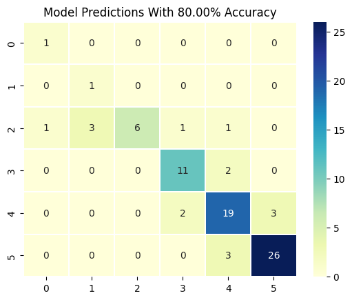
RandomForestClassifier
Hyperparamter Tuning
param_grid = {
'max_depth': [i for i in range(2, 9)],
'min_samples_leaf': [2 ** i for i in range(0, 4)],
'criterion': ["entropy", "gini"]
}
rf = RandomForestClassifier(random_state=42)
print(y_train.shape)
grid_search_rf = GridSearchCV(rf, param_grid, cv=StratifiedKFold(n_splits=3), scoring='accuracy')
grid_search_rf.fit(X_train, y_train.values.ravel())
best_params_rf = grid_search_rf.best_params_
print("Best Hyperparameters:", best_params_rf)
print("Best Score:", grid_search_rf.best_score_)(320, 1)
Best Hyperparameters: {'criterion': 'gini', 'max_depth': 8, 'min_samples_leaf': 1}
Best Score: 0.8125844942103098RandomForest Classifier
rf = RandomForestClassifier(n_estimators=300,
max_depth=best_params_rf["max_depth"],
min_samples_leaf=best_params_rf["min_samples_leaf"],
criterion=best_params_rf["criterion"])
rf.fit(X_train, y_train.values.ravel())
y_pred = rf.predict(X_test)Plotting the RandomForest Trees
fig, axes = plt.subplots(nrows = 1,ncols = 5,figsize = (10,3), dpi=250)
for index in range(5):
tree.plot_tree(rf.estimators_[index],
feature_names = X_train.columns.tolist(),
class_names= [f"{i}" for i in range(6)],
filled = True,
ax = axes[index])
axes[index].set_title('Estimator: ' + str(index + 1), fontsize = 10)
# fig.savefig(f'rf_{dt.n_estimators}trees.png')
plt.show()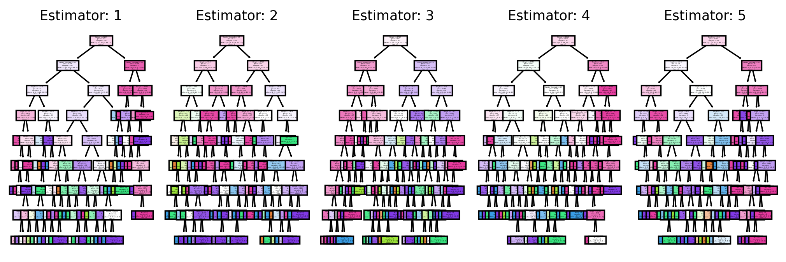
print("Micro F1: ", sklearn.metrics.f1_score(y_test, y_pred, average='micro'))
print("Macro F1: ", sklearn.metrics.f1_score(y_test, y_pred, average='macro'))Micro F1: 0.8875
Macro F1: 0.8523938236704195confusion_matrix = sklearn.metrics.confusion_matrix(y_test, y_pred)
conf_df = pd.DataFrame(confusion_matrix, index=[f"{i}" for i in range(6)], columns=[f"{i}" for i in range(6)])
heatmap = sns.heatmap(conf_df, annot=True, fmt="d", linewidths=0.35, cmap="YlGnBu")
plt.title(f"Model Predictions With {(np.sum(confusion_matrix.diagonal()) / y_test.shape[0]) * 100:.2f}% Accuracy")Text(0.5, 1.0, 'Model Predictions With 88.75% Accuracy')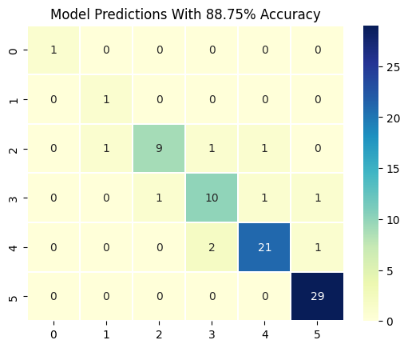
'''
Plot a graph that compares the two models, randomly generated with tuned hyperparameter models
'''
dt_results = []
rf_results = []
n_samples = 40
indexes = [i for i in range(n_samples)]
for i in indexes:
dt = DecisionTreeClassifier(max_depth=8, min_samples_leaf=2, min_samples_split=4)
dt.fit(X_train, y_train)
y_pred_dt = dt.predict(X_test)
rf = RandomForestClassifier(n_estimators=325, max_depth=8)
rf.fit(X_train, y_train.values.ravel())
y_pred_rf = rf.predict(X_test)
confusion_matrix_dt = sklearn.metrics.confusion_matrix(y_test, y_pred_dt)
confusion_matrix_rf = sklearn.metrics.confusion_matrix(y_test, y_pred_rf)
dt_results.append((np.sum(confusion_matrix_dt.diagonal()) / y_test.shape[0]) * 100)
rf_results.append((np.sum(confusion_matrix_rf.diagonal()) / y_test.shape[0]) * 100)
plt.plot(indexes, dt_results, label="DT results")
plt.plot(indexes, rf_results, label="RF results")
plt.xlabel("Sample")
plt.ylabel("Accuracy on Test Data in %")
plt.title("Accuracy Comparison Between DT and RF on Randomly Generated Models")
plt.legend()
plt.show()
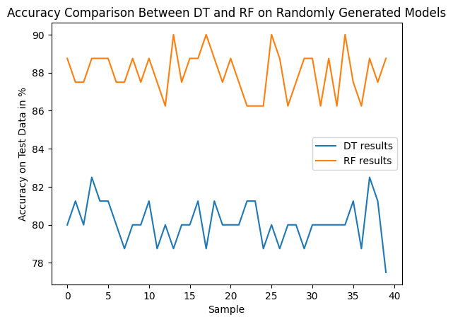
Improvements
print(X_train.shape)
print(y_train.shape)
param_grid = {
'max_depth': [i for i in range(2, 10)],
'min_samples_leaf': [2 ** i for i in range(0, 4)],
'criterion': ["entropy", "gini"]
}
rf = RandomForestClassifier(random_state=42)
grid_search_rf = GridSearchCV(rf, param_grid, cv=StratifiedKFold(n_splits=5), scoring='accuracy')
grid_search_rf.fit(X_train.drop(['Gender_Encoded'], axis=1), y_train.values.ravel())
best_params_rf = grid_search_rf.best_params_
print("Best Hyperparameters:", best_params_rf)
print("Best Score:", grid_search_rf.best_score_)
rf = RandomForestClassifier(n_estimators=300,
max_depth=best_params_rf["max_depth"],
min_samples_leaf=best_params_rf["min_samples_leaf"],
criterion=best_params_rf["criterion"])
rf.fit(X_train.drop(['Gender_Encoded'], axis=1), y_train.values.ravel())
y_pred = rf.predict(X_test.drop(['Gender_Encoded'], axis=1))(320, 3)
(320, 1)
Best Hyperparameters: {'criterion': 'entropy', 'max_depth': 8, 'min_samples_leaf': 1}
Best Score: 0.85625confusion_matrix = sklearn.metrics.confusion_matrix(y_test, y_pred)
conf_df = pd.DataFrame(confusion_matrix, index=[f"{i}" for i in range(6)], columns=[f"{i}" for i in range(6)])
heatmap = sns.heatmap(conf_df, annot=True, fmt="d", linewidths=0.35, cmap="YlGnBu")
plt.title(f"Model Predictions With {(np.sum(confusion_matrix.diagonal()) / y_test.shape[0]) * 100:.2f}% Accuracy (NO GENDER)")Text(0.5, 1.0, 'Model Predictions With 90.00% Accuracy (NO GENDER)')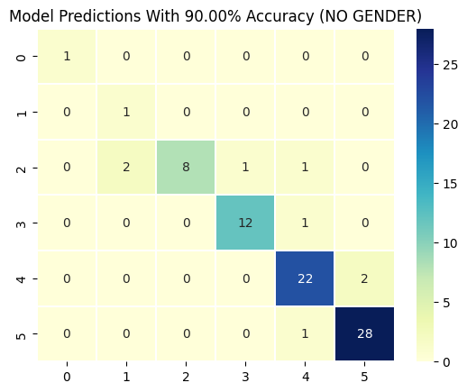
print("Micro F1: ", sklearn.metrics.f1_score(y_test, y_pred, average='micro'))
print("Macro F1: ", sklearn.metrics.f1_score(y_test, y_pred, average='macro'))Micro F1: 0.9
Macro F1: 0.8450314415205457Learning Curve
import matplotlib.pyplot as plt
from sklearn.datasets import load_iris
from sklearn.model_selection import learning_curve
from sklearn.tree import DecisionTreeClassifier
train_sizes, train_scores, test_scores = learning_curve(rf, X_train, y_train.values.ravel(), cv=StratifiedKFold(n_splits=5))
display = LearningCurveDisplay(train_sizes=train_sizes,
train_scores=train_scores, test_scores=test_scores, score_name="Score")
display.plot()
plt.show()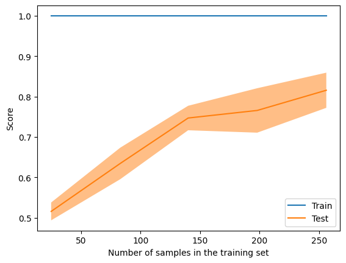